Jie-Shiang Yang, Ya-Tse Wu, Chi-Chun Lee · National Tsing Hua University
Interspeech 2026
Each codec row shows F0 contour plots and audio samples for a representative utterance. Click ▼ to expand. Use the language selector to switch dataset. Colors: green = Ground Truth, red = Pretrain, blue = PIRA.
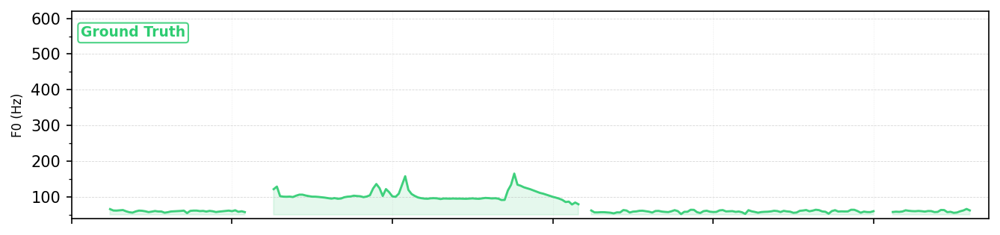
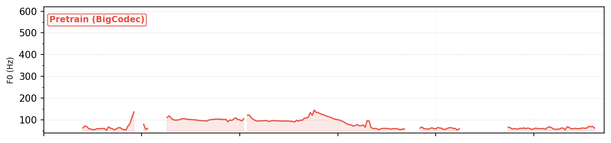
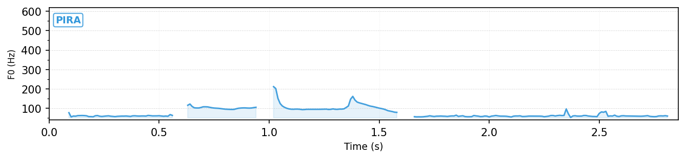
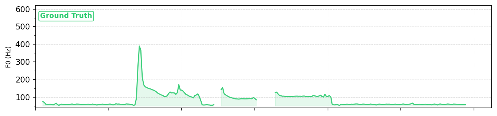
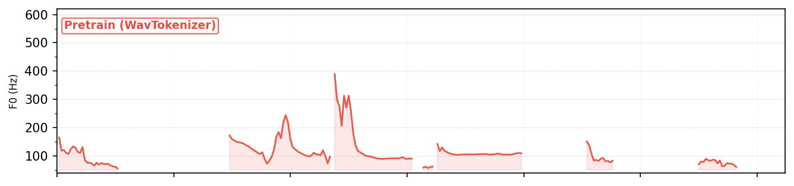
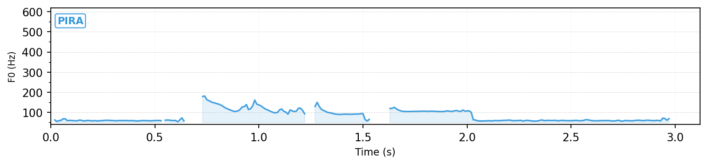
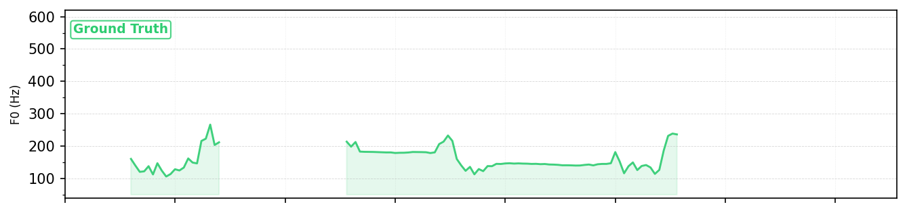
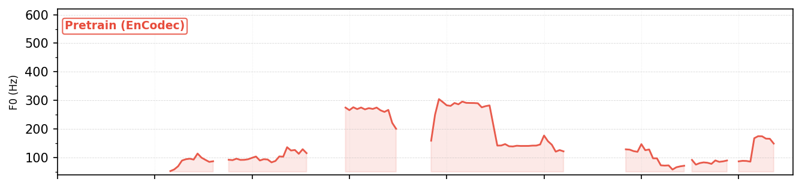
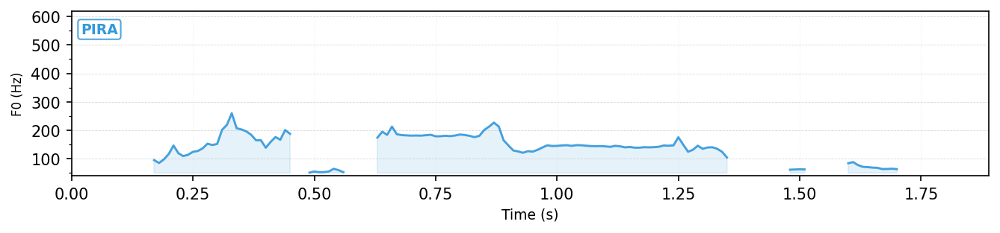
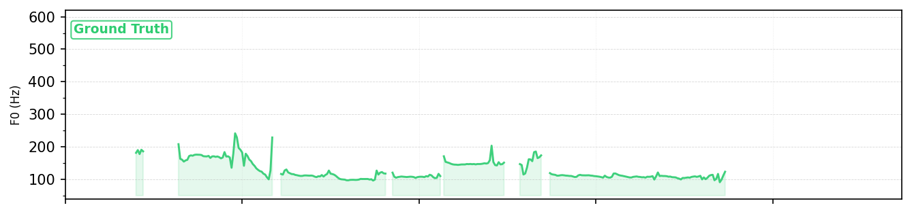
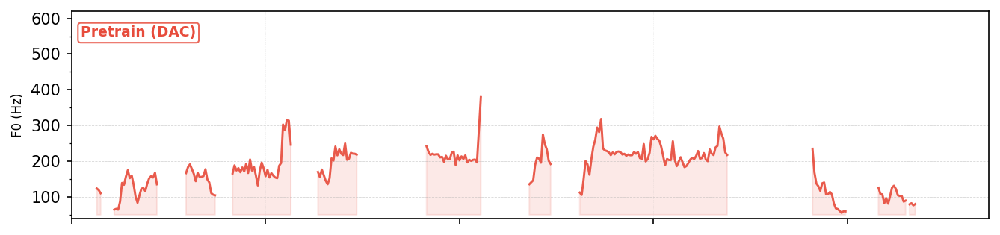
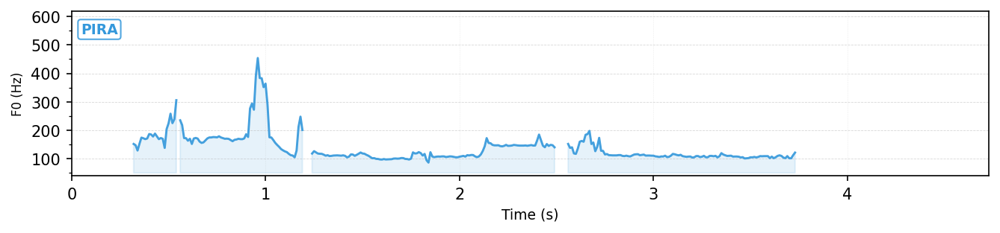
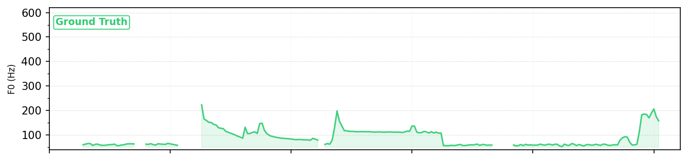
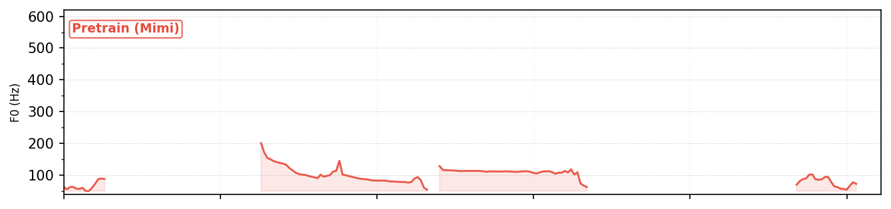
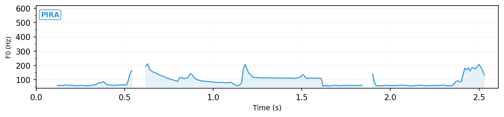
UTMOS scores (higher is better, scale 1–5) for Pretrain vs. PIRA across all codec–language pairs. PIRA preserves perceptual quality while restoring tonal accuracy.
| Codec | TTASRCE (Hokkien) | MDCC (Cantonese) | VIVOS (Vietnamese) | ||||||
|---|---|---|---|---|---|---|---|---|---|
| Pretrain | PIRA | Δ | Pretrain | PIRA | Δ | Pretrain | PIRA | Δ | |
| BigCodec | 4.0915 | 4.0888 | −0.0027 | 4.1809 | 4.1910 | +0.0101 | 4.0840 | 4.1005 | +0.0165 |
| WavTokenizer | 4.0961 | 4.0964 | +0.0003 | 4.0979 | 4.0970 | −0.0009 | 3.7242 | 3.7333 | +0.0091 |
| EnCodec | 2.6288 | 2.7324 | +0.1036 | 2.4956 | 2.6982 | +0.2026 | 2.5603 | 2.7763 | +0.2160 |
| DAC | 4.0685 | 4.0675 | −0.0010 | 4.1993 | 4.2007 | +0.0014 | 4.0153 | 4.0183 | +0.0030 |
| Mimi | 3.9753 | 3.9745 | −0.0008 | 3.9360 | 3.9522 | +0.0162 | 4.0714 | 4.0792 | +0.0078 |